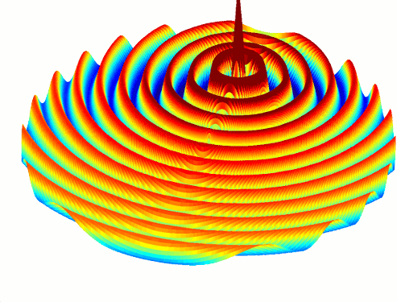

Tutorial: 2D Cylindrical Wave
From openEMS
- Download the latest matlab file using gitweb: CylindricalWave_CC.m
- Simulation Time: ~ 20 min
We will cover in this tutorial:
- setup a cylindrical mesh including five nested sub-grids
- define vtk and hdf5 dumps
- read, evaluate and visualize dumped field data with matlab
First Steps
- Install and verify your openEMS installation: Tutorial: First Steps
Matlab Simulation Script
- Start the script within an empty environment:
close all clear clc
- Setup basic simulation parameter
The maximum simulation radius is set to 2560.
There are 5 sub-domains, and as the radius increases past a sub-domain boundary, the number of azimuthal points double. This prevents severe oversampling of the fields at the centre of the simulation space.
The location of the source is also specified, which is off-centre and at an angle of 45 degrees (convert to radians later).
physical_constants mesh_res = 10; radius = 2560; split = ['80,160,320,640,1280']; split_N = 5; height = mesh_res*4; f0 = 1e9; excite_offset = 1300; excite_angle = 45;
- Cylindrical FDTD setup
This is where the multigrid option is selected.
FDTD = InitFDTD('NrTS',100000,'EndCriteria',1e-4,'CoordSystem',1,'MultiGrid',split); FDTD = SetGaussExcite(FDTD,f0,f0/2); BC = [0 3 0 0 0 0]; % pml in positive r-direction FDTD = SetBoundaryCond(FDTD,BC);
- Setup the cylindrical mesh
The number of azimuthal mesh lines in the outer simulation sub-domain is calculated.
Note that DefineRectGrid also defines a cylindrical grid.
Also note that CSXGeomPlot([Sim_Path '/' Sim_CSX]); will not show the subgrid, instead the finest azimuthal mesh is displayed for all radii.
% 50 mesh lines for the inner most mesh % increase the total number of mesh lines in alpha direction for all sub-grids N_alpha = 50 * 2^split_N + 1; CSX = InitCSX('CoordSystem',1); mesh.r = SmoothMeshLines([0 radius],mesh_res); mesh.a = linspace(-pi,pi,N_alpha); mesh.z = SmoothMeshLines([-height/2 0 height/2],mesh_res); CSX = DefineRectGrid(CSX, 1e-3,mesh);
- Setup an off-center excitation
start = [excite_offset excite_angle/180*pi-0.01 -20]; stop = [excite_offset excite_angle/180*pi+0.01 20]; CSX = AddExcitation(CSX,'excite',1,[0 0 1]); CSX = AddBox(CSX,'excite',0 ,start,stop);
- Define the dump boxes
start = [mesh.r(1) mesh.a(1) 0]; stop = [mesh.r(end-8) mesh.a(end) 0]; % time domain vtk dump CSX = AddDump(CSX,'Et_ra','DumpType',0,'FileType',0,'SubSampling','4,10,1'); CSX = AddBox(CSX,'Et_ra',0 , start,stop); % frequency domain hdf5 dump CSX = AddDump(CSX,'Ef_ra','DumpType',10,'FileType',1,'SubSampling','2,2,2','Frequency',f0); CSX = AddBox(CSX,'Ef_ra',0 , start,stop);
- Create the simulation folder/ write the xml file and run openEMS
Sim_Path = 'tmp'; Sim_CSX = '2D_CC_Wave.xml'; [status, message, messageid] = rmdir( Sim_Path, 's' ); % clear previous directory [status, message, messageid] = mkdir( Sim_Path ); % create empty simulation folder WriteOpenEMS([Sim_Path '/' Sim_CSX],FDTD,CSX); RunOpenEMS(Sim_Path, Sim_CSX);
- Visualize the field in the frequency domain as defined in the dump box
[field mesh_h5] = ReadHDF5Dump([Sim_Path '/Ef_ra.h5']); r = mesh_h5.lines{1}; a = mesh_h5.lines{2}; a(end+1) = a(1); %closeup mesh for visualization [R A] = ndgrid(r,a); X = R.*cos(A); Y = R.*sin(A); Ez = squeeze(field.FD.values{1}(:,:,1,3)); Ez(:,end+1) = Ez(:,1); %closeup mesh for visualization E_max = max(max(abs(Ez))); %get maximum E_z amplitude while 1 for ph = linspace(0,360,41) %animate phase from 0..360 degree surf(X,Y,real(Ez*exp(1j*ph*pi/180)),'EdgeColor','none') caxis([-E_max E_max]/10) zlim([-E_max E_max]) pause(0.3) end end

E_z(f) animation

{kind=link}